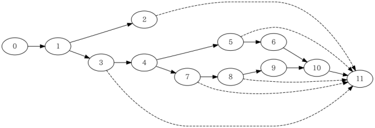
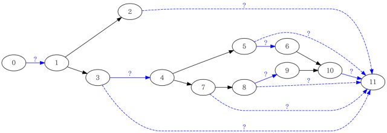
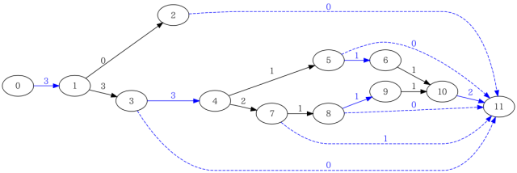
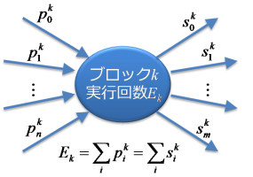
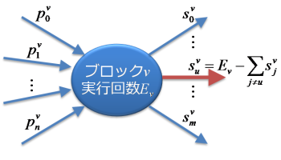
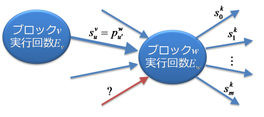
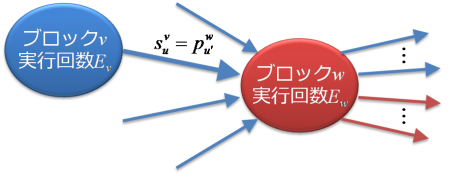

Coverture
gccが生成するgcno/gcdaファイルをパースし、結果をXMLで出力します。また、gcov互換のgcovファイルを生成します。
gcnoファイル
gcovでカバレッジするときに、gccのコンパイルオプションに-ftest-coverageを追加します。このオプションを指定してソースファイルをコンパイルすると、gccはソースファイルの拡張子を.gcnoに変更したノーツファイルを生成します。
gcnoファイルには何が記録されているのでしょうか。gcnoファイルの構造については、gccのソースコードに含まれるgcov-io.h（FreeBSDなら/usr）に次のような説明があります。
The basic block graph file contains the following records
note: unit function-graph*
unit: header int32:checksum string:source
function-graph: announce_function basic_blocks {arcs | lines}*
announce_function: header int32:ident int32:checksum
string:name string:source int32:lineno
basic_block: header int32:flags*
arcs: header int32:block_no arc*
arc: int32:dest_block int32:flags
lines: header int32:block_no line*
int32:0 string:NULL
line: int32:line_no | int32:0 string:filename
フォーマットに関する詳細はgcov-io.hを参照してください。gcnoファイルには、対応するソースコードの関数（C++ならメソッド）のフローグラフに関する情報が保存されています。この有向グラフは、グラフのノードである基本ブロックと、グラフのエッジであるアークで構成されます。また、基本ブロックそれぞれに対応するソースコードのファイル名とその行番号も保存されています。
具体的に、次のプログラムをコンパイルしてgcnoファイル（foo.gcno）を作成してみます。
% cat foo.c
#include <stdio.h>
#include <stdlib.h>
#include <err.h>
void bar(FILE *fp);
void foo(const char *path)
{
FILE *fp;
if (path == NULL) {
abort();
}
if ((fp = fopen(path, "r")) == NULL) {
warn("fopen: %s", path);
return;
}
bar(fp);
fclose(fp);
}
% gcc -Wall -W -ftest-coverage -O0 -c foo.c
% ls -1 foo.*
foo.c
foo.gcno
foo.o
Covertureでfoo.gcnoをパースした出力foo.をみると、関数fooは次の図のような12個の基本ブロックと、17のアークで構成されていることがわかります。

また、行番号の情報から、基本ブロックの番号とソースコードの対応は次のようになっています（bbは基本ブロックのID）。
bb #
-- ---
1 #include <stdio.h>
2 #include <stdlib.h>
3 #include <err.h>
4
5 void bar(FILE *fp);
6
7 void foo(const char *path)
1 8 {
1 9 FILE *fp;
10
1 11 if (path == NULL) {
2 12 abort();
13 }
3 14 if ((fp = fopen(path, "r")) == NULL) {
5 15 warn("fopen: %s", path);
6 16 return;
17 }
7 18 bar(fp);
8 19 fclose(fp);
20 }
また、アークには属性があり、gcov-io.hには次のような定数が定義されています。
#define GCOV_ARC_ON_TREE (1 << 0) #define GCOV_ARC_FAKE (1 << 1) #define GCOV_ARC_FALLTHROUGH (1 << 2)
上の図では、FAKEのアークは波線で表現されています。関数fooから外部の関数を呼び出すところは、FAKEのアークで最終ブロック（関数の出口）に分岐しています。これは、呼び出した外部の関数がlongjmp(3)や（C++での）例外のスローなど、非局所分岐を実行し、現在の関数から抜ける経路を表しています。
exit(3)やabort(3)など、戻らない関数の呼び出しには、関数から戻る経路はありません。ただし、外部関数の呼び出しのため、FAKEのアークの経路は存在します。
McCabeのcyclomatic complexity
gcnoファイルをパースすることで、McCabeのcyclomatic complexity（以下、CCと記述します）を計算することができます。定義に従うと、次の式で求めることになります。
複雑度 = アーク総数 − 基本ブロック総数 + 2
上の例では、関数fooの複雑度は17 − 12 + 2 = 7ということになります。しかし、この値はFAKEのアークも考慮しているので、外部関数の呼び出し数の分だけ余計な複雑度が加えられたことになります。したがって、通常の複雑度は次のように計算するべきです。
複雑度 = アーク総数 − FAKEのアーク数 − 基本ブロック総数 + 2
この場合、関数fooの複雑度は2になり、実線のフローグラフの複雑度と等しくなります。これらの値はfoo.gcno.xmlでは、functionGraph要素のcomplexity属性と、complexityWithFake属性の値として記録されています。
Cの場合はこれで終わりですが、C++の場合はさらに考慮すべきことがあります。gcnoファイルからCCとNPATHを計算するgnocchiは、FAKEのアークが最終ブロックに向かうことを利用して、最終ブロックを除外して複雑度を計算します。実際C++では、上記のCのケースの説明とは異なり、FAKEのアークが最終ブロックだけに向かうとは限りません。FAKEのアークが最終ブロック以外の基本ブロックに入るケースもあります（例えば、catchに対応する基本ブロックに入ります）。したがって、「最終ブロックに入るFAKEのアーク」だけを除外する必要があります。最終的に、複雑度は次のようになります。
複雑度 = アーク総数 − 最終ブロックに入るFAKEのアーク数 − 基本ブロック総数 + 2
これでC++でもCCを求めることができるようになりましたが、釈然としない点もあります。例えば、どこで例外をスローしたのかとは関係無く、catchの数だけ複雑度が増加することや、例外をスローしても複雑度が増えないことなどは、直感的には理解できません。これは、McCabeのCCがもともと構造化プログラミングの要素を対象に考案されたものであり、例外などの非局所分岐を考慮していないことに起因します。つまり、例外というメカニズムがもたらす複雑さはCCでは表現できません。catchの数だけ複雑度が増加するのは、例外の静的な側面だけを考慮するからにすぎません。例外とCCは概念的に相性が悪いのでしょう。
gcdaファイル
gcnoファイルの次にgcdaファイルを調べてみます。実際にgcovでカバレッジするときには、前述の-ftest-coverageに加え、-fprofile-arcsをgccのコンパイルオプションに追加します。これらのオプションを指定してソースファイルをコンパイルし、そのプログラムを実行します。すると、プログラムの終了時†に、ソースファイルの拡張子を.gcdaに変更したデータファイルが生成されます。
gcnoの構造と同様、gcdaの構造に関しても、gcov-io.hに次のような説明があります。
The data file contains the following records.
data: {unit function-data* summary:object summary:program*}*
unit: header int32:checksum
function-data: announce_function arc_counts
announce_function: header int32:ident int32:checksum
arc_counts: header int64:count*
summary: int32:checksum {count-summary}GCOV_COUNTERS
count-summary: int32:num int32:runs int64:sum
int64:max int64:sum_max
gcdaファイルには主に各アークの実行回数が記録されます。ただし、ON_TREEのアークの実行回数は含まれません。gccのソースコードに含まれるprofile.c/usr）によると、ON_TREEの属性は「そのアークが関数フローグラフのスパニングツリーを構成する」ことを表すようですが、ここではON_TREEではないアークだけが実行回数の測定対象になることが重要です。
前述のフローグラフを書き直し、ON_TREEのアークを青色で描画すると、次のようになります。

関数foo()を呼び出すプログラムを作成、実行して、foo.gcdaを出力してみます。
% gcc -O0 -ftest-coverage -fprofile-arcs foo.c main.c % ls foo.* foo.c foo.gcno % ./a.out ... % ls foo.* foo.c foo.gcda foo.gcno
foo.gcdaをパースすることで、フローグラフのON_TREEではないアークの実行回数がわかります。例えば、ここでは次のような結果を入手できたとします。
gccのソースコードに含まれるgcov.c/usr）の関数solve_の手順で、このフローグラフを解いてみると、最終的に次のような結果を得ることができます。

Covertureでfoo.gcnoとfoo.gcdaをパースした出力foo.gcda.xmlからも、同様な結果を得ることができます。
フローグラフを解く手順
関数solve_flow_graph()がどのようにフローグラフを解くのか、簡単に説明しておきます。次の図のように、ブロックの実行回数は「ブロックに入るアークの実行回数の和」または「ブロックから出るアークの実行回数の和」に等しくなります。ただし、入口のブロック（入るアークは0個）と出口のブロック（出るアークは0個）は除きます。

最初に、すべてのブロックを、片側（入る側または出る側）のアークの実行回数がすべてわかるものと、そうではないもの（つまり両側に実行回数の不明なアークがある）ものに分けます。片側のアークの実行回数がすべてわかるブロックは実行回数を求めます。
次に、実行回数がわかったブロックすべてについて、それぞれ次のように処理します。
- 片側のアークの実行回数はすべてわかっているので、その反対側のアークで実行回数がわからないものがいくつあるのか調べます。2つ以上あるか、まったくない場合は、次のブロックに進みます。そうではなく、1つだけある場合は、次の図のようにブロックvの実行回数から、わかっているアークの実行回数を減算することで、そのアークの実行回数を求めます。

- さらに、そのアークと接続するブロックvの反対側のブロックwについて考えます。そのアークがvからwに向かうものとします。ブロックwの実行回数がすでにわかっている場合は、wから出るアークの実行回数は既にわかっていたことになります。wに入るアークで実行回数がわからないものがいくつあるのか調べ、次の図のように1つだけある場合は、上記の処理を再帰的に繰り返します（アークがwからvに向かう場合も同様）。

- 反対にブロックwの実行回数が不明な場合は、wに入るアークの実行回数は、少なくても1つ以上わかっていなかったことになります（直前まで両側に実行回数が不明なアークがあったので）。wに入るアークで実行回数がわからないものがいくつあるのか調べます。次の図のように0になった場合は、wの実行回数が求まります。wは実行回数がわかったブロックとなったので、再帰的に上記の処理を繰り返します（アークがwからvに向かう場合も同様）。

実際には、関数solve_flow_graph()は再帰呼び出しを使わず、「invalid but inferable」と「valid but unpropagated」という2つのリストとループで、同様な処理を実現しています。
† atexit(3)のフックによってgcdaファイルを出力しているので、exit(3)の呼び出しかmain関数から戻ることで終了する必要があります。シグナルやabort(3)でプロセスが終了する場合、あるいは_exit(2)で終了する場合は、gcdaファイルは生成、更新されません。ユニットテストとカバレッジを併用する場合は注意する必要があります。